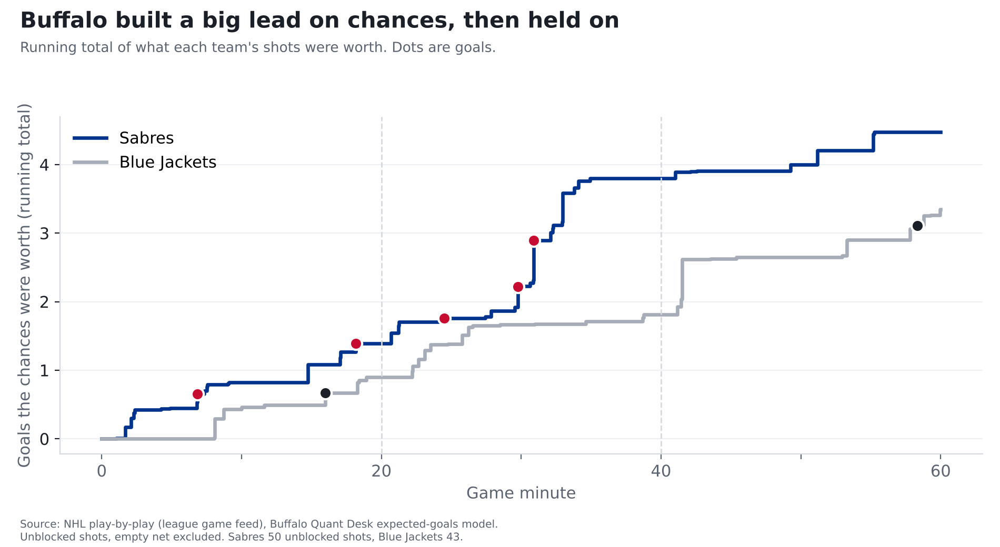
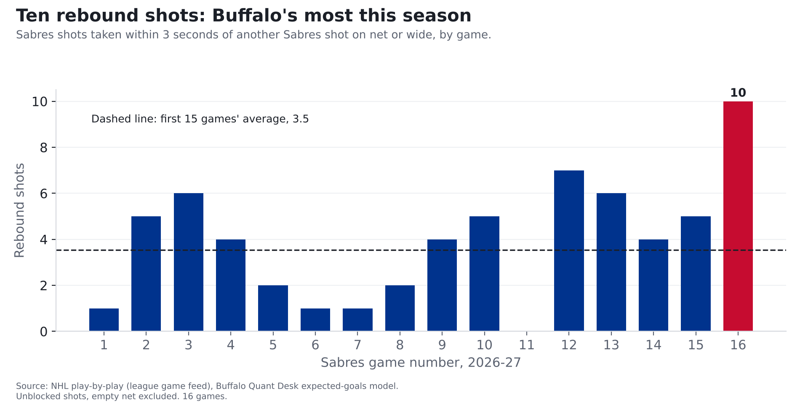

Sabres 5, Blue Jackets 2: Buffalo won the scramble in front of the net
Buffalo's most dangerous night of the season came from living around Columbus's crease: 10 rebound shots, their most this year.
Finding: The Sabres created their most dangerous night of the season Friday, with shots worth 4.5 goals, by living around Columbus's crease. They had 10 rebound shots, about three times their usual, something that happens in about 1 of every 90 NHL team-games. Two of their five goals came off rebounds.
One game, 2026-11-06, in Buffalo. The Sabres are 16 games into the season.

How we measure "chances"
Every shot has odds of going in, based on where it was taken and what kind of shot it was. A shot from within 10 feet goes in about 1 time in 7; one from 60 feet or more, about 1 in 125. Add up the odds on every shot and you get what a team's chances were worth in goals. (The full explanation, with the chart, is in our story on last year's 50-win season.)
Friday, the Sabres' shots were worth 4.5 goals and Columbus's 3.3. Buffalo scored 5. If you replayed those exact shots thousands of times, Buffalo would win about 60% of the time and tie about 15%. Their chances were good enough to win most replays.
What changed from their first 15 games
| Friday | Average, first 15 games | Rank among 16 games | |
|---|---|---|---|
| What Buffalo's chances were worth | 4.5 goals | 3.0 | 1st |
| Rebound shots | 10 | 3.5 | 1st |
| Buffalo shots from within 20 feet | 17 | 13.0 | 4th |
| Columbus shots from within 20 feet | 9 | 13.3 | 5th fewest |
| Power-play chances, in goals | 1.0 | 0.6 | 1st |
| Goals saved vs. an average goalie | +1.3 | +0.0 | 3rd |
The rebound game
A rebound here means a shot taken within three seconds of another Sabres shot (his own or a teammate's) that was saved or missed the net. Across the NHL over the last three seasons, rebounds went in 11.5% of the time, against 6.3% for other shots, because the goalie is usually out of position. NHL teams average about 3.3 rebound shots a game this season. Buffalo had 10, worth 1.5 goals on their own.

| Period | Shooter | Distance | Worth | |
|---|---|---|---|---|
| 1 | Jack Quinn | 13 ft | 0.12 | Goal |
| 1 | Tage Thompson | 13 ft | 0.04 | |
| 1 | Mattias Samuelsson | 11 ft | 0.02 | |
| 1 | Noah Ostlund | 4 ft | 0.06 | |
| 2 | Zach Benson | 7 ft | 0.05 | |
| 2 | Zach Benson | 7 ft | 0.05 | |
| 2 | Zach Benson | 10 ft | 0.05 | |
| 2 | Josh Doan | 4 ft | 0.58 | Goal |
| 2 | Josh Doan | 12 ft | 0.05 | |
| 2 | Jason Zucker | 13 ft | 0.43 |
Zach Benson had three of them by himself. Jack Quinn's opening goal and Josh Doan's deflection from 4 feet both came off rebounds. Doan's shots were worth a full goal (1.0), the most of any Sabre.
Two periods of control
Through 40 minutes, Buffalo's chances were worth 3.8 goals to Columbus's 1.8, and they led 5-1. Columbus won the third period on chances (1.5 to 0.7), 69% of the chance value. That's a normal protect-the-lead period. Across the league over the last three seasons, teams down three or more in the third usually got a bit over half the chances (55% overall), because the team ahead sits back, and about 37% of them got 69% or more.
The goalie and the finishers
- Ukko-Pekka Luukkonen faced shots worth 3.3 goals and allowed 2, about 1.3 better than an average goalie. He came in -2.0 goals against an average goalie for the season; he's now -0.6.
- Josh Norris scored twice on shots worth 0.4 goals combined.
- The power play created its most dangerous chances of the season, worth 1.0 goals, but didn't score.
- The penalty kill allowed another goal, a Zach Werenski shot from 46 feet that goes in about 1 time in 20. Buffalo has now allowed 17 power-play goals in 16 games, 30th of 32 (1st is fewest). The league average is 11 over that many games.
| Period | Time | Team | Scorer | Shot | Odds it went in |
|---|---|---|---|---|---|
| 1 | 6:50 | Sabres | Jack Quinn | backhand from 13 ft, rebound | 0.12 |
| 1 | 16:00 | Blue Jackets | Kent Johnson | snap from 22 ft | 0.18 |
| 1 | 18:10 | Sabres | Josh Norris | snap from 24 ft | 0.13 |
| 2 | 4:30 | Sabres | Rasmus Dahlin | slap from 53 ft | 0.03 |
| 2 | 9:46 | Sabres | Josh Norris | backhand from 4 ft | 0.30 |
| 2 | 10:53 | Sabres | Josh Doan | deflected from 4 ft, rebound | 0.58 |
| 3 | 18:21 | Blue Jackets | Zach Werenski | wrist from 46 ft, power play | 0.05 |
What to watch Sunday against Vegas
Rebounds come from getting bodies to the net, which is partly a habit and partly how a game breaks. One night of it doesn't make a trend. The things to watch against Vegas: whether Buffalo keeps getting bodies to the crease, whether Luukkonen stays at or above average, and whether the penalty kill stops leaking.
For the stat-heads
- Expected goals (xG): our gradient-boosted model on unblocked, non-empty-net shots, rescaled per season so league xG equals league goals. Friday: BUF 4.47 xG on 50 unblocked shots (37 on goal), CBJ 3.35 on 43 (26 on goal). Win probability: 20,000 simulated replays of each shot as an independent coin flip with p = xG.
- Rebound = shot taken within 3 seconds of the same team's previous unblocked shot (on goal or missed), with no other event in between. Blocked attempts never start a rebound. A raw recount from the play feed that also counts shots after blocked attempts gives 12 for Buffalo. Teams with 10+ rebound shots: 1.1% of team-games in 2026-27, 1.6% in 2025-26.
- Score effects: third-period xG share for teams down 3+ goals by the game score at the time of each shot, 2023-24 to 2025-26 (55.0% pooled; per game, median 59%).
- GSAx = xG on unblocked shots faced minus goals allowed. Power play = 5v4, 5v3, 4v3.